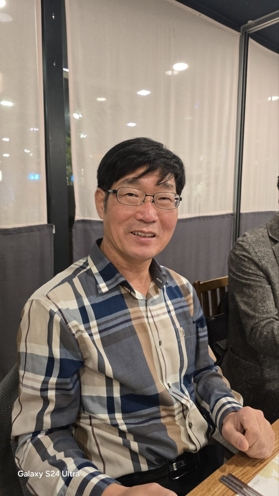
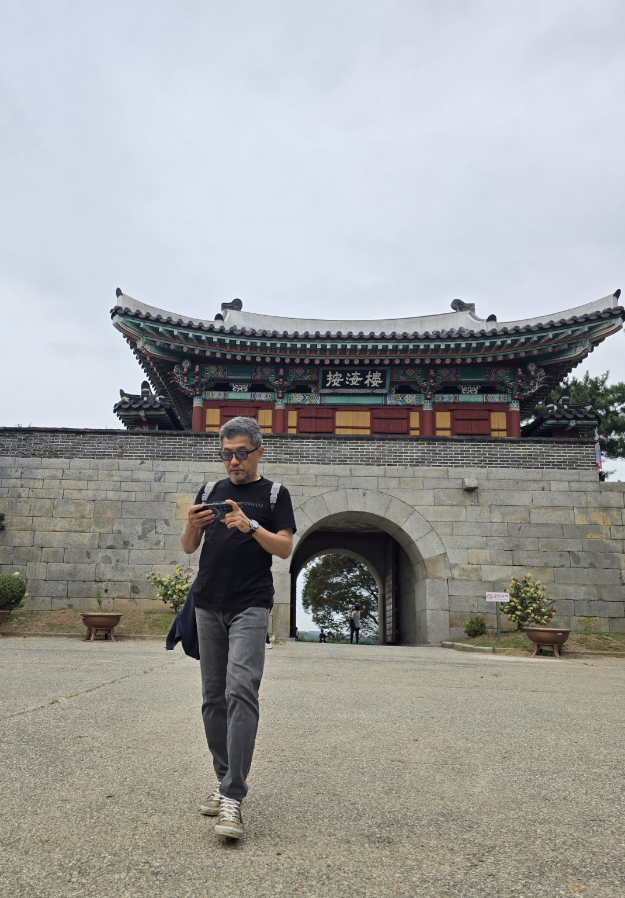
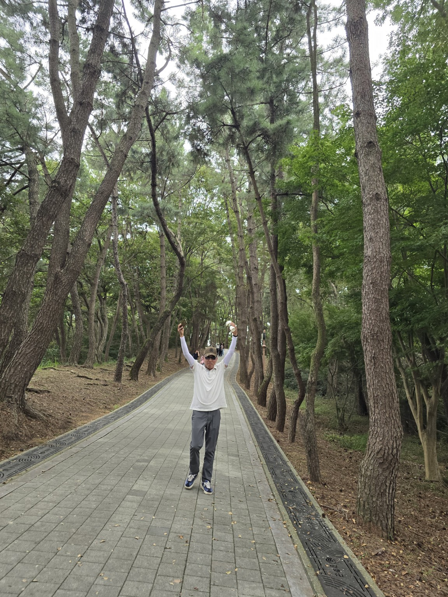
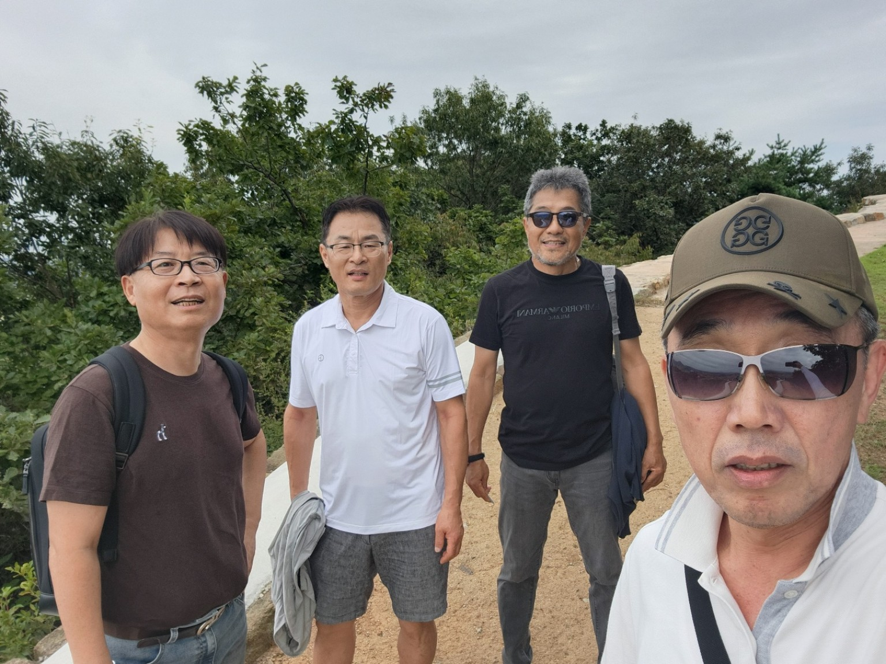
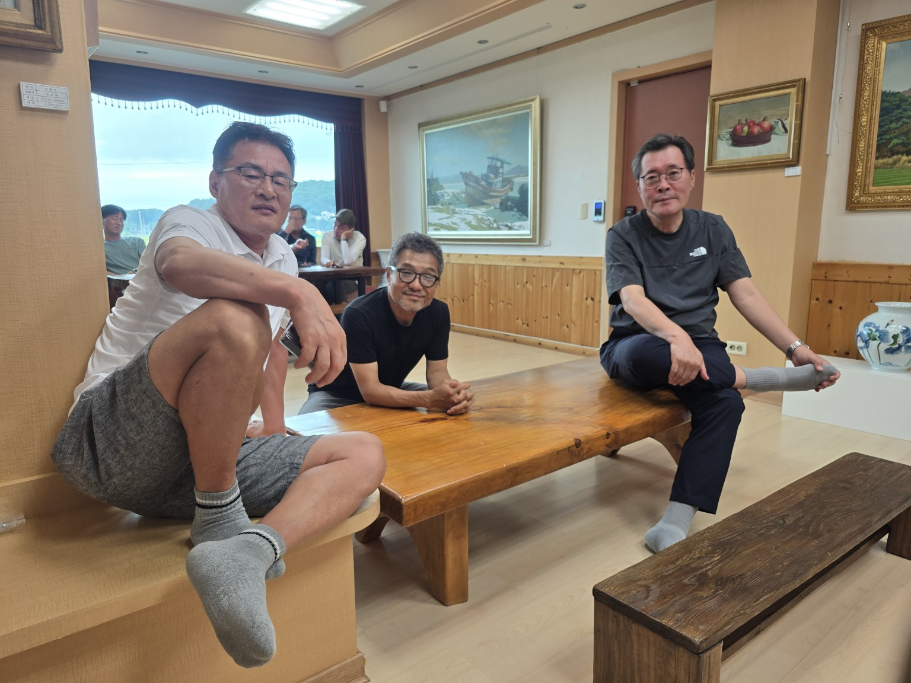
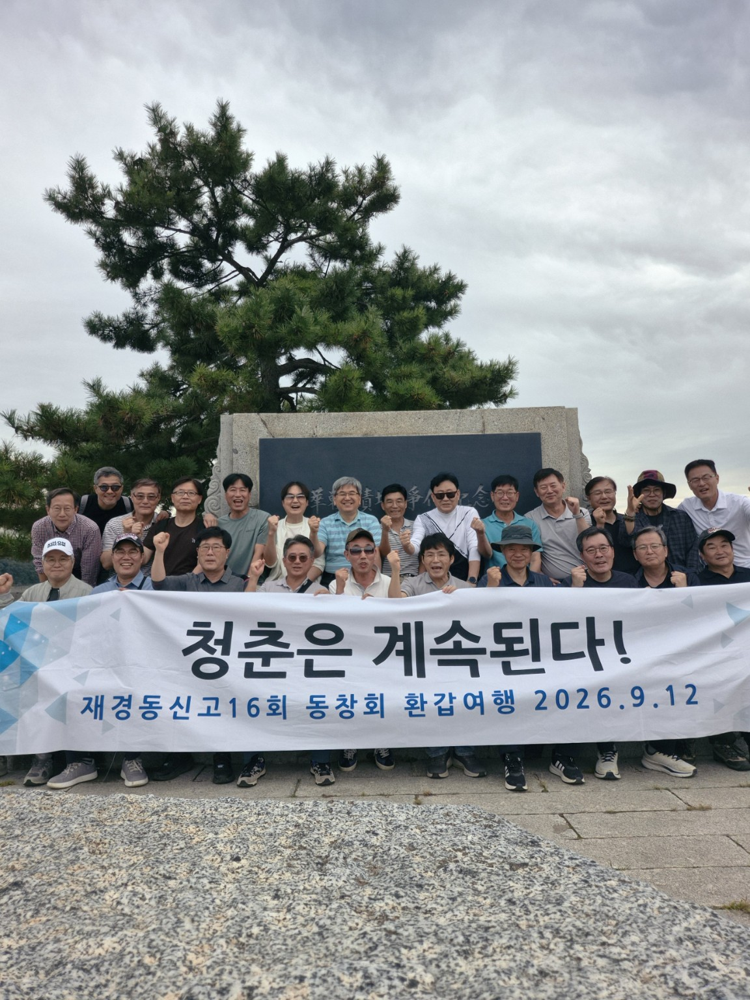

50대 후반 일반인 · 2시간 실습
생활 속의 AI
검색·영수증·건강검진·이미지·동영상
직접 질문자료 이해콘텐츠 제작
120분 진행
오늘의 순서
- 도입·크롬 30분: 돌봄 공고 읽기와 탭 비교
- 카드 영수증 15분: 지출표 만들기
- 건강검진·보험약관 25분: 근거 찾기
- 휴식 10분 · 이미지 20분: 여행 이미지 제작
- 동영상·정리 20분: 짧은 영상 생성과 결과 확인
학습 목표
오늘의 결과물
1
공고
자격·서류 요약
2
생활 자료
지출표·검진 질문·약관 점검
3
창작
산동유람 이미지와 영상 기획
시작 전
실습 준비
- 크롬·구글 계정·제미나이 또는 NotebookLM
- 교육용 가상 자료 ② 건강검진표·③ 보험약관·④ 돌봄 공고
- 연습용 카드 영수증 또는 개인 정보 가린 영수증
- 이미지·동영상 주제: 산동유람 일정 또는 가족 안부
기본 개념
AI의 역할
- 질문을 받아 초안 생성
- 사진·문서의 문자와 내용 정리
- 이미지와 영상의 장면 생성
- 최종 선택과 사실 확인은 사람의 몫
제미나이 인 크롬 · 준비 5분
크롬 실습 준비
- 자료 ④ 어르신 돌봄 공고를 크롬 탭에서 열기
- 상단 제미나이에게 물어보기 선택
- 질문창의 공유 탭에서 공고문 선택 표시 확인
- PDF 내용을 읽지 못하면 본문을 Google 문서 탭에 붙여넣기
제미나이 인 크롬 · 실습 1
공고문 요약
자료 ④ · 돌봄 공고
현재 공유한 돌봄 공고를 어려운 말 없이 다섯 줄로 요약해줘. 신청 기간과 신청 장소를 원문 표현대로 적어줘.
제미나이 인 크롬 · 실습 2
신청 자격 확인
자료 ④ · 돌봄 공고
이 공고에서 만 60세이고 소득이 없는 사람의 신청 가능 여부를 알려줘. 연령의 예외 조건과 거주 조건을 구분하고 근거가 있는 항목을 표시해줘.
제미나이 인 크롬 · 실습 3
신청 준비 목록
자료 ④ · 돌봄 공고
이 공고에 신청하려면 무엇을 언제 어디에 제출해야 해? 필수 서류와 해당자만 내는 서류를 나눠 순서대로 정리해줘.
제미나이 인 크롬 · 실습 4 · 6분
두 탭 비교
- 자료 ④ 돌봄 공고·자료 ③ 보험약관을 각각 크롬 탭에 열기
- 질문창의 탭 추가에서 두 문서 모두 선택
- 공유 탭 목록의 두 체크 표시 확인
- 비교 질문 실행 뒤 각 문서의 원문과 대조
두 문서 · 준비 서류 비교
공유한 두 문서에서 돌봄사업 신청 서류와 보험금 청구 서류를 각각 찾아 표로 비교해줘. 서로 다른 목적의 서류임을 표시하고 원문 근거를 적어줘.
자료 준비
영수증 가리기
- 카드번호·승인번호·이름 가리기
- 필요한 날짜·가맹점·금액만 남기기
- 연습용 자료 사용 가능
- 가린 부분이 다시 보이지 않는지 확인
생활 자료 실습
카드 영수증
- 이름·카드번호·승인번호를 가린 연습용 영수증
- 결제일·가맹점·금액·품목 읽기
- 식비·교통비·생활비 분류
- 합계와 중복 결제 의심 항목 점검
복사해서 사용
영수증 질문
연습용 카드 영수증
첨부한 연습용 영수증에서 날짜·가맹점·금액을 표로 정리해줘. 지출 항목을 분류하고 합계를 계산해줘. 읽기 어려운 부분은 추측하지 말고 표시해줘.
결과 점검
지출표 확인
1
날짜
원본 영수증과 일치
2
금액
합계 재계산
3
분류
내 생활 기준으로 수정
자료 ② · 가상 결과지
건강검진 자료
- 교육용 일반건강검진 결과 통보서 열기(2쪽)
- 기준을 벗어난 항목과 정상 항목 함께 포함
- NotebookLM 바로 열기 — PDF를 소스로 추가
- 원문 인용 번호를 눌러 수치와 문구 확인
자료 준비
검진표 가리기
- 이름·생년월일·등록번호 가리기
- 검사 항목·수치·참고 범위만 남기기
- 연습용 자료 우선 사용
- 개인 자료 사용 시 공유 범위 확인
따라 하기
검진표 첨부
- NotebookLM에서 새 노트북
- 자료 ② 건강검진표 열기(2쪽) → PDF를 소스로 추가
- 질문 후 인용 번호에서 원문 위치 확인
- 스튜디오 생성은 시간 여유가 있을 때 시연
복사해서 사용
검진 질문
자료 ② · 건강검진표
이 결과지에서 기준을 벗어난 항목만 쉬운 말로 정리해줘. 2차 검진 시기와 준비물도 원문 근거를 붙여 알려줘. 수치만으로 진단하지 말고 의료진에게 물을 질문 세 개를 제안해줘.
원문 대조
검진 결과 점검
- 정상 항목을 이상 항목으로 잘못 분류했는지 확인
- 2차 검진 안내의 기간과 준비물 원문 대조
- 인용 번호 클릭 → 자료 ② 해당 위치 확인
- 실제 검진 결과의 해석은 의료진 상담
자료 ③ · 가상 약관
보험약관 읽기
- NotebookLM에 자료 ③ 보험약관 열기(3쪽) → PDF를 소스로 추가
- 보장 한도·자기부담금·면책사유 찾기
- 갱신 시 보험료 변경 조건 확인
- 실제 보험 적용은 가입 약관 원문과 보험사 확인
복사해서 사용
보험약관 질문
자료 ③ · 보험약관
이 약관에서 꼭 알아야 할 내용 다섯 가지와 불리할 수 있는 조건을 정리해줘. 임플란트 보장 여부와 보험금 청구 기한·서류를 해당 조항을 인용해 알려줘.
잠깐 쉬기
10분 뒤 이미지·동영상 실습
이미지 실습 · 20분
이미지 실습 준비
- 자료 ① 산동유람 일정표 열기(2쪽)
- 핵심 장소: 곡부 공자 유적·청도 바닷가
- 여행 분위기: 여유·우정·늦가을
- 참가자 이름과 연락처 제거 후 일정만 입력
복사해서 사용
여행 이미지 질문
자료 ① · 산동유람 일정
첨부한 산동유람 일정에서 2~3일차의 장소와 분위기를 참고해 가로형 여행 이미지를 만들어줘. 곡부 공자 유적과 청도 바다의 늦가을 풍경, 친구들의 여유로운 여행. 참가자 이름·연락처·글자 없음.
직접 만들기
이미지 결과 확인
- 이미지 생성 도구에 일정과 질문 입력
- 곡부·청도 장소 표현과 화면 비율 확인
- 잘못된 글자·원치 않는 인물은 수정 요청
- 완성 이미지 한 장 저장 → 영상 실습에 사용
동영상 실습 · 15분
동영상 실습 준비
- 방금 만든 여행 이미지 한 장 선택
- 영상 생성 도구의 이미지→동영상 기능 열기
- 짧은 장면 한 개: 풍경·움직임·분위기 지정
- 계정의 영상 생성 가능 여부와 길이 확인
동영상 실습 · 사진 자료
사진 6장 열기·저장

① 인물

② 성문

③ 숲길

④ 친구들

⑤ 휴식

⑥ 단체
사진을 누르면 크게 열립니다. 스마트폰에서는 사진을 길게 눌러 저장하세요.
동영상 실습 · 24~30초
Astra 프롬프트 복사
사진 6장으로 추억 영상 만들기
Astra 열기
첨부한 사진 6장을 순서대로 사용하여 24~30초 분량의 추억 영상을 만들어 주세요. 전체 분위기는 따뜻하고 활기찬 동창 여행입니다. 사진 속 인물의 얼굴과 옷차림은 원본과 동일하게 유지하고, 과도한 얼굴 변형이나 새로운 인물 생성은 하지 마세요. 각 사진은 약 4초간 보여주고 부드러운 확대, 이동, 장면 전환을 적용해 주세요. 마지막 단체사진은 약 5초간 유지하고 ‘청춘은 계속된다’라는 문구로 마무리해 주세요. 화면 비율은 16:9, 잔잔하고 밝은 여행 영상 스타일로 제작해 주세요.
동영상 실습 · Astra
사진 6장 → 24~30초 영상
- 사진 6장을 ①~⑥ 순서대로 업로드
- 앞 슬라이드의 프롬프트를 복사해 붙여넣기
- 화면 비율은 16:9, 영상 길이는 24~30초로 지정
- 얼굴 변형 여부와 마지막 문구를 확인한 뒤 생성
완성 문구 · 청춘은 계속된다
자료 ① · 일정 활용
영상 장면표
| 구간 | 화면·움직임 |
|---|---|
| 시작 | 곡부 공자 유적지 · 천천히 앞으로 |
| 전환 | 청도 바다 · 부드러운 좌우 이동 |
| 끝 | 친구들의 뒷모습 · 따뜻한 마무리 |
복사해서 사용
동영상 생성 질문
저장한 여행 이미지 → 짧은 영상
이 이미지의 장소와 구도를 유지하며 짧은 여행 영상으로 만들어줘. 카메라가 천천히 앞으로 움직이고 나뭇잎과 바람만 자연스럽게 움직이게 해줘. 늦가을의 따뜻한 빛, 얼굴 변경·새 인물·글자 추가 없음.
재생·수정
동영상 결과 확인
- 이미지 업로드 → 질문 입력 → 생성 → 재생
- 장소·움직임·얼굴 왜곡과 글자 오류 확인
- 한 부분만 바꿔 재생성 또는 저장
- 영상 생성 불가 계정: 장면표와 질문 완성
결과 공유
실습 결과
1
문서
공고·검진·약관의 근거 한 가지
2
이미지
일정에서 만든 여행 이미지 한 장
3
영상
짧은 결과물 또는 완성 장면표
생활 속 기준
안전한 사용
- 개인 정보: 업로드 전 가리기
- 건강 정보: AI 설명은 질문 준비용
- 지출 정보: 원본 영수증과 금액 대조
- 영상 제작: 계정별 이용 가능 기능과 한도 확인
생활 속의 AI
한 가지부터 시작
질문 → 초안 → 직접 확인 → 나에게 맞게 수정
페이지생활 자료이미지·영상